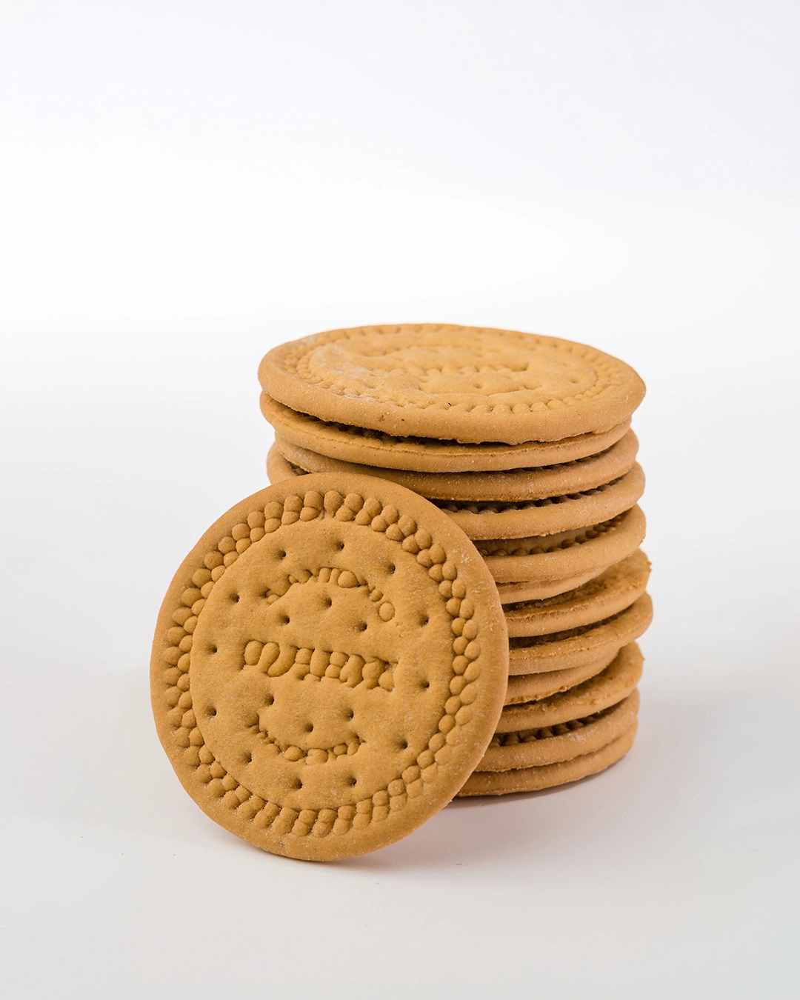

Bolacha Maria
A Bolacha Maria é uma bolacha muito conhecida e utilizada
em várias sobremesas portuguesas.
Imagem da Bolacha Maria

Ingredientes da Bolacha Maria
- Farinha de trigo
- Açúcar
- Óleo vegetal
Formas de utilizar a Bolacha Maria
- Comer simples
- Preparar bolo de bolacha
- Utilizar em sobremesas
Características
| Característica |
Informação |
| Tipo |
Bolacha |
| Utilização |
Sobremesas |
| Sabor |
Doce |
Vídeo sobre a Bolacha Maria
Ver receita de Bolo de Bolacha Maria